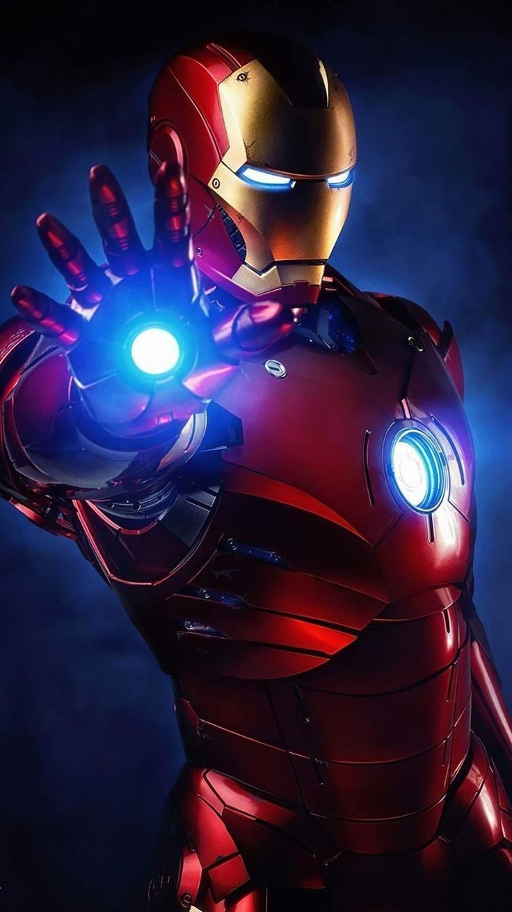

Un multimillonario, empresario e ingeniero, Tony Stark sufre una lesion del pecho durante un secuestro en el que sus captores tratan de obligarlo a construir una arma masiva de destruccion. El crea en su su lugar una poderosa armadura para salvar su vida y escapar de su cautiverio. Luego utiliza la armadura para proteger al mundo como Iron Man. A traves de su corporacion - Industrias Stark - Tony ha creado muchas armas militares, algunas de las cuales, junto con otros dispositivos tecnologicos de su invencion, se han integrado en su armadura, ayudandolo a luchar contra el crimen.
Iron man ha hecho apariciones menores en series animadas como;
http://marvel.com/universe/Iron_Man
Bernal Ruiz Melanie
Mandame Correo:
